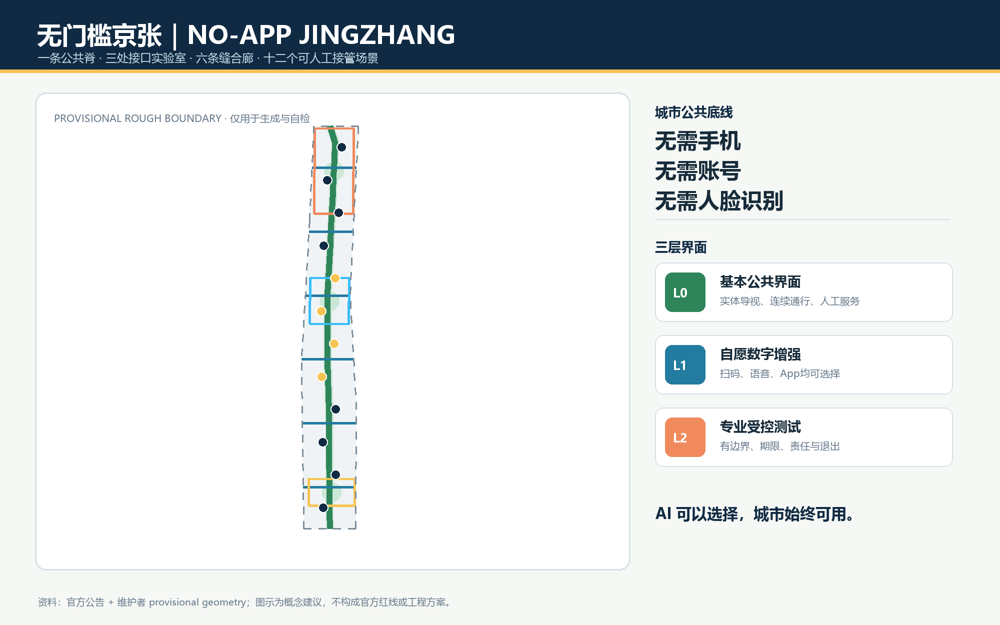
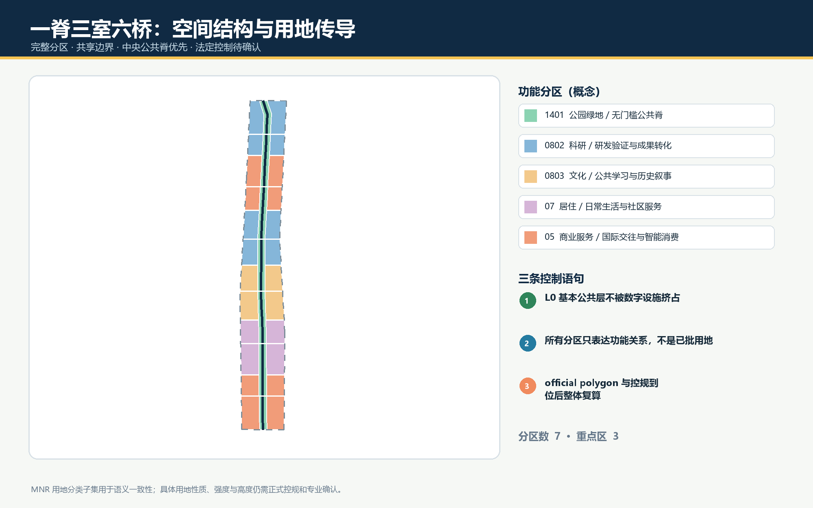
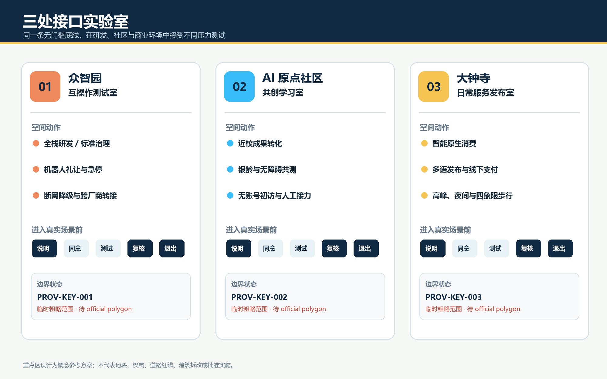
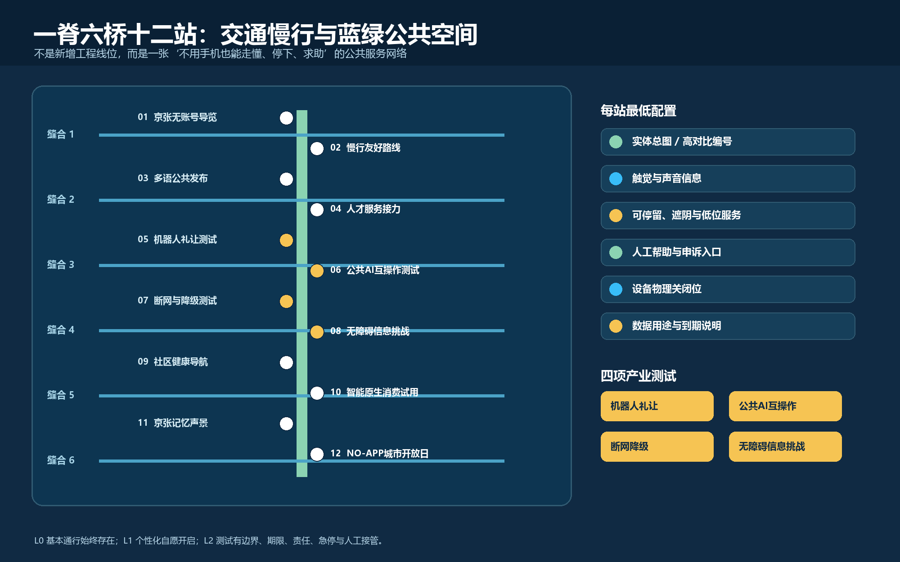
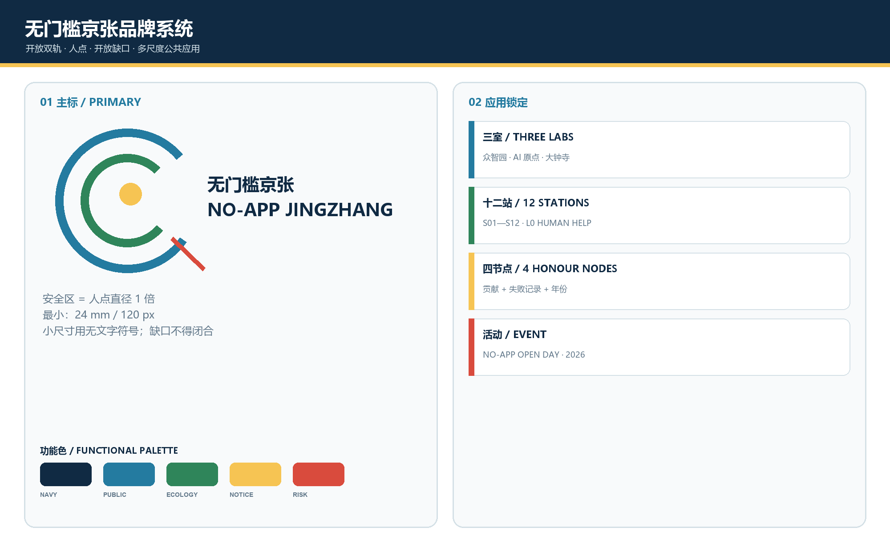
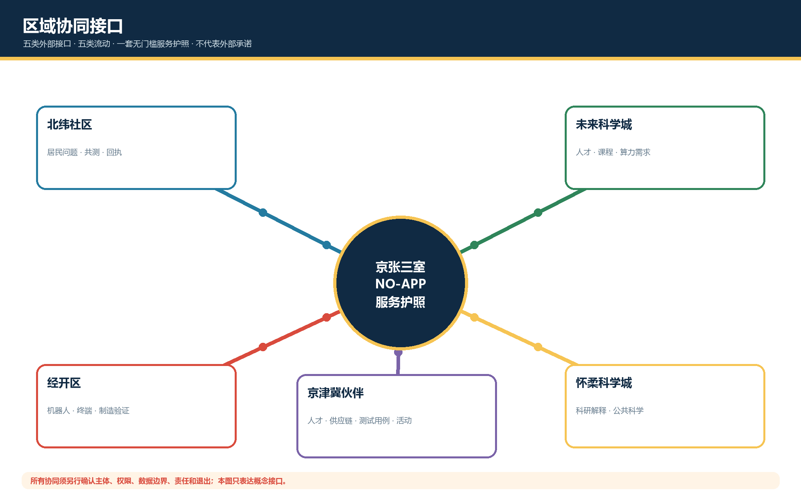
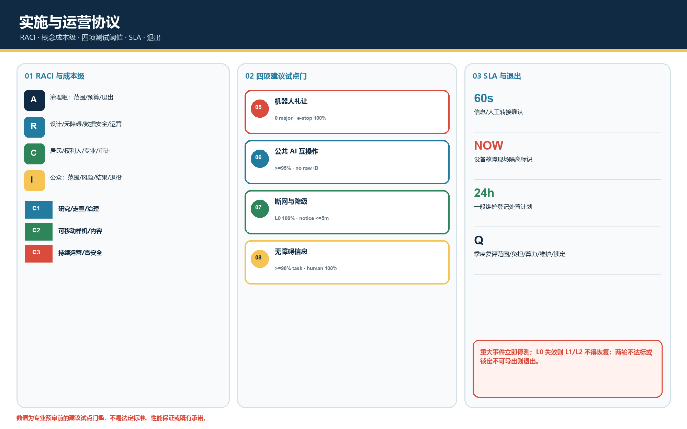

众智园
互操作、机器人礼让、断网与降级。
AI 可以选择，城市始终可用。基本通行、公共信息与人工帮助不以 App、账号或人脸识别为前提；个性化服务自愿开启，专业测试有边界、期限、责任与退出。
设计主线高对比，provisional boundary 低对比；所有空间动作均为概念建议。

43.6 km² 统筹研究：产业标准与区域协同。
约 11.4 km² 总体设计：公共脊、缝合廊与场景节点。
约 368.4 ha 重点区域：研发、社区与商业三种压力测试。
与 metrics.json 同源，EPSG:4548 包内复算。
完整覆盖的概念分区 + 无门槛首层空间原型；强度、高度与拆改留待正式资料。

三处区域同一底线、不同测试任务。

互操作、机器人礼让、断网与降级。
共创学习、无障碍挑战、人才服务接力。
日常消费、多语发布与非个性化选项。
南北连续、东西缝合；实体导视与人工帮助常在。

十二张场景卡，其中四项为产业测试验证；每项都有 L0 基本界面和人工接管。
实体总图与触觉标识
可选AI · 人工接管 · 可退出固定方向、休息点与人工问路
可选AI · 人工接管 · 可退出中英要点和现场服务
可选AI · 人工接管 · 可退出纸质清单与人工初诊
可选AI · 人工接管 · 可退出物理边界、急停与安全员
可选AI · 人工接管 · 可退出统一说明、服务编号与人工转接
可选AI · 人工接管 · 可退出静态导视、纸质台账和巡查
可选AI · 人工接管 · 可退出语音、大字、触觉与简洁交互
可选AI · 人工接管 · 可退出公开服务信息与人工问询
可选AI · 人工接管 · 可退出现金、多介质与明码信息
可选AI · 人工接管 · 可退出文字、图形与可触摸时间线
可选AI · 人工接管 · 可退出纸质日程、总台与公共展区
可选AI · 人工接管 · 可退出品牌、区域协同和实施运营由概念口号升级为可核查的图件、责任链、阈值与退出条件。

主标、三室锁定、十二站、四个荣誉节点和年度活动；含安全区、最小尺寸和禁用规则。

北纬社区、未来科学城、怀柔科学城、经开区和京津冀伙伴；不假定外部承诺。

RACI、C1/C2/C3 概念成本级、采购审计、四项测试建议阈值、SLA、复评与退出。
公告 17 条必选任务 + agent.1-agent.6 全覆盖；机器检查不代表官方批准。
公开或清权来源；国际案例只用于机制比较。